Declination
axis adjustments
(and right fork
cover removal)
Adjustments of the declination axis are done inside the right fork arm (the fork with the power panel). The fork cover must be removed before you can access the adjustment screws on the worm block. Remove any batteries before you start. To begin, remove the four allen head screws on the inside of the fork, using a 3/32" allen wrench. The four screw locations are shown below.
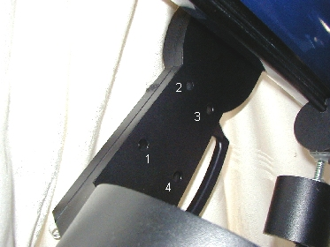
Image #1 - The four screw locations on the inner fork arm
There are seven screws that need to be removed before the cover can be taken off, so you still have three more screws. The last three screws require some other parts to be removed first. Do not remove the two screws on the bottom of the fork, it's unnecessary.
Updated 02/08/04 - A member of the LX90 group commented that with his scope, the two screws on the bottom of the fork had to be removed as well. This may be due to a new mold for the fork cover on the newer OTA's. The cover on the older models was in two pieces, the bottom part being held on with these two screws. If you have a newer model of LX90, you may want to remove these two screws if you can't get the cover off. You can remove them on the older models as well, it's just uneccesary to do so when removing the fork cover. |
Loosen the declination clutch and let the OTA find "bottom". If you need to, support the OTA with either foam or some other soft support. Continue unscrewing the declination knob until it can be removed. You should have the knob, a washer, the "fake" scale and a spacer that all come off together. Set these parts aside.
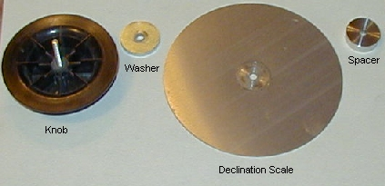
Image 2, The declination knob and associated parts, in order of
their assembly
Under the declination knob is the outer clutch plate, with the spur gear surrounding it. The outer clutch plate and spur gear need to be removed to access the three remaining screws for the the cover.
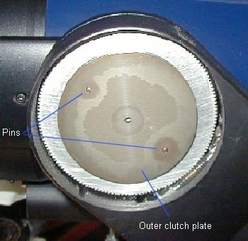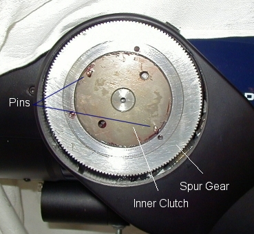
Image #3 - The declination knob and scale removed and, #4 - The
spur gear and inner clutch face, outer clutch plate removed
The outer clutch plate sits on two pins. You can remove the clutch plate by wiggling the plate on the pins. If the clutch won't loosen (there's grease behind it), try a small screwdriver between it and the gear wheel (it's aluminum, so be careful not to maul the surface). Once you remove the outer plate, the inner plate and the spur gear are in full view. Once removed, the outer plate can be degreased. When I re-grease the outer clutch plate, I only grease the pin holes, and I make sure that no grease is on the outside edge. You want the "grip area" (seen on image #4) to be free of grease - or at the least just a slight film to prevent galling of the aluminum surface of the spur gear.
At this point, remove the spur gear from the inner clutch plate. There are three holes in the spur gear, 120º offset, where you can place a small screwdriver to assist in pulling the spur gear off the clutch plate. Push down on the left side of the worm gear to take some pressure off the spur, and pull the spur off the inner clutch. Again, there's lots of grease here holding the parts together. Behind the spur gear is a small spacer. Be sure you keep the two together, and don't forget the spacer when you re-assemble the parts. Both parts can be degreased at this time. When re-greasing, use only a slight film of grease on the spacer. The spur gear should be greased on the teeth, and a slight film on the inside diameter where it contacts the inner clutch, and the two faces where they contact the clutches. Work the grease into the teeth, and then clean off any excess from both faces of the spur outside the grip area.
| Updated 11/23/02 Some owners have informed me that there was no spacer on their scopes. Meade may have changed the design in more recent scopes (mine is two years old now). |
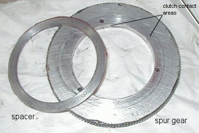
Image #5 - The spacer and spur gear removed from the inner clutch
plate
Now we can reach the last three screws holding the fork arm cover to the fork. These three screws can be found where the spur gear was, around the perimeter of the inner clutch plate. Remove these three screws (again, use the 3/32" allen wrench) and **carefully** pull the fork cover away from the fork at the top. There are wires connected to the cover at the bottom - and they aren't very long. Support the cover if needed while you continue to work. I suggest that you make a drawing of the connector positions just in case they come loose while working on the drive - both those on the power panel and those on the motor control board.
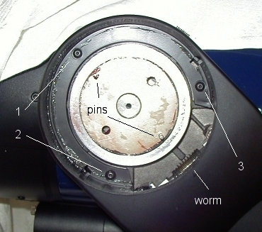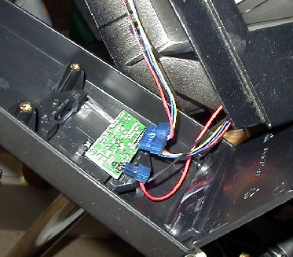
Image #6 - The three final screw locations for the fork cover,
and #7, the power panel PCB, wire harness and fork cover
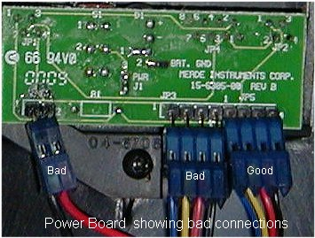
Power board and bad connections from the wiring harness. Make
sure these connections are good when finishing up.
Finally, we have access to the worm block and all the adjustment screws for the worm. Before we can make any adjustments though, we need to reinstall everything but the fork cover and the "fake" declination scale. Once all the parts are re-assembled, we can lock the declination axis and very lightly "rock" the OTA declination axis while looking at the location where the worm and spur gear contact each other. If the worm is moving back and forth in the worm block (right to left), then you need to take up the end play by tightening the allen screw on the end of the worm block. Small, tiny adjustments are the key here, as you don't want to over tighten it and subject the worm to excessive drag. Adjust only to the point that removes the lateral play in the worm.
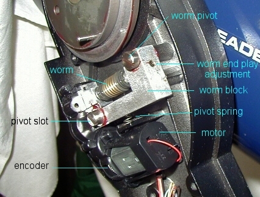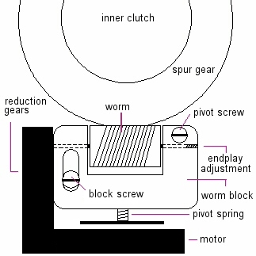
Image #8 - Location of the main adjustments
The second adjustment is usually less frequent, but does happen. There are two screws that secure the worm block to the fork. The upper right screw is a pivot point, and the block must be loose enough to allow it to pivot, but tight enough to prevent the block from lifting away from the fork. The lower left screw sits in a slotted hole, to allow the worm assembly to pivot up against the spur gear. This screw should also allow the block to pivot, but yet also must secure the block to the fork. The addition of a lubricated, thin shim washer on the screw between the block and the fork standoff can assist here. Make sure the block pivot spring is in place. You can test the pivot by pushing down on the left side of the worm block, just above the left block screw (the one in the slot). The worm block should move freely, without binds, and yet should have little or no play at all between it and the fork.
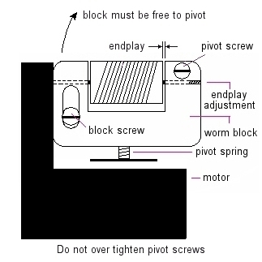
To clean the encoder and LED, the worm assembly should be removed and cleaned separately. Instructions here.
At this point you can also degrease the worm gear. Over time, the grease will be built up on either end of the worm, and can be removed quite easily with a clean cloth. If you've had problems, a complete cleaning is recomended to remove any metal particles in the grease. A light coating on the worm is more than enough when re-greasing; grease from the spur gear will also coat the worm. Both worm block screws should have enough factory grease to last a hundred years. If for some reason you had to remove the block/motor assembly, clean and re-grease both screw shafts, washers and the interior of the block holes. Make sure the contact points (standoffs) on the fork arm have a slight coating of grease as well. This whole area should be free of extensive amounts of grease. If you notice that grease has been slung around the fork from slewing at high speed, there was too much grease on the parts from the factory (common). Clean off any excess grease from the fork before reassembling.
Check to make sure your adjustments have taken care of any declination axis play with the clutch tightened, and if everything looks good, re-assemble the parts in reverse order. A good quality, wide temperature, white lithium grease will work well on these parts. Do not over grease! You only need a small amount, evenly covering the parts. What you see on these pictures is my declination drive fully greased - that's the total amount of grease I use on my worm and block, clutches and gear.
These adjustments are the same for the RA drive, however accessing them is slightly different. You can access the base disassembly procedure here.
|| Back to Contents || Wedge adapter || Focuser || Azimuth
adjuster || Weight Set || Dovetail ||
|| Compass || Polar || Pinouts || Tours/Ephemerides || LED Markers ||